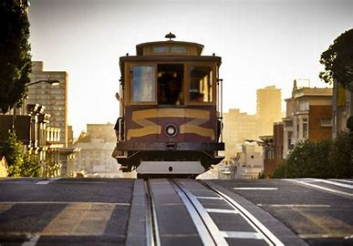
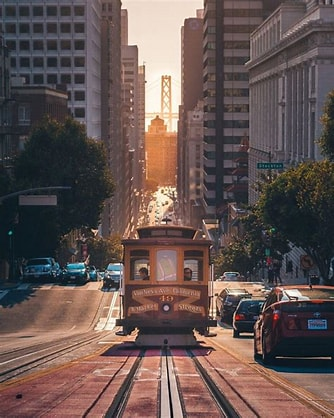
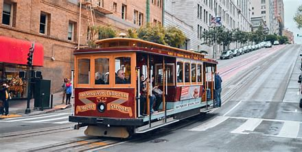
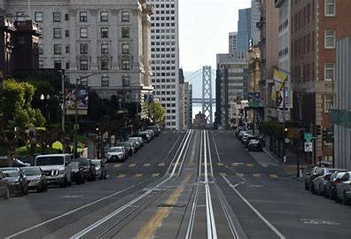

History
San Francisco's cable cars are a historic symbol of the city. They have been a part of San Francisco since the late 19th century, providing transportation and a unique experience for residents and tourists alike. The cable car system was created to navigate the city's steep hills and has become one of the most iconic attractions in San Francisco.
The first successful cable car system was introduced by Andrew Smith Hallidie in 1873, inspired by witnessing horses struggling on the steep streets. The technology quickly became popular, with multiple lines operating across the city. Cable cars were a significant improvement over horse-drawn streetcars, providing a more reliable and efficient means of transportation.
Visitor Information
- Hours: Operating daily from 6:00 AM to midnight.
- Tickets: Available at various locations. Prices vary for adults, children, and seniors.
- Routes: Three main lines: Powell-Hyde, Powell-Mason, and California Street.
- Facilities: Restrooms available at certain stops, and a cable car museum.
- Public Transportation: Easily reachable by bus, BART, and Muni.
Cable Cars Gallery




